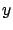
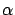
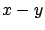
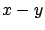
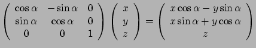
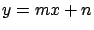
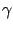
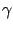
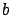
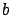

Hasta ahora, se ha trabajado con una elipsoide de dimensiones genéricas, aunque alineada con los ejes. El problema original era con una elipse de revolución (es decir, sus dos ejes menores iguales) y orientada arbitrariamente. La primer diferencia simplifica el problema, pues la elipsoide puede rotarse según el eje mayor sin que la misma sufra cambios. Como se verá más adelante, se aprovechó esta propiedad para colocar el plano intersectante en una posición conveniente. Por el contario, la segunda diferencia obliga a redefinir el sistema de coordenadas de manera que los dos focos pertenezcan a uno de los ejes, y el centro de la elipsoide sea el origen. Dado que la elipse de revolución puede rotarse según el eje mayor sin que sufra cambios, los otros dos ejes pueden fijarse arbitrariamente. Lo que se hizo, fue colocar uno de ellos paralelo al plano intersectante (y por ende el otro eje queda fijado), que como se verá simplifica muchísimo la determinación de las dimensiones, y por lo tanto la parametrización de la elipse resultado de la intersección.
Por lo tanto se necesita expresar el plano intersectante y los
puntos que conforman la pared del edificio en este nuevo sistema de
coordenadas. Una manera de hacer esto es aplicarle a los puntos las
mismas operaciones que llevaron de la elipsoide original a la nueva
elipsoide alineada. En la implementación del algoritmo, se alineó el
eje mayor de la elipsoide con el eje  (la elección fue
completamente arbitraria). Veamos entonces como llevar una elipsoide
de focos
y
 a otra con centro en el
origen y focos
y
.
a otra con centro en el
origen y focos
y
.
El primer paso es trasladar la elipsoide de manera tal que su centro coincida con el origen de coordenadas. Para ello, se halla el centro de la elipsoide:
Luego se debe rotar  según el eje  de manera tal que
los focos queden dentro del plano . se puede
calcular proyectando los polos al plano  como (forzando al
notación, llamaremos
y
de manera tal que
los focos queden dentro del plano . se puede
calcular proyectando los polos al plano  como (forzando al
notación, llamaremos
y
 a los focos
luego de haber sido trasladados):
a los focos
luego de haber sido trasladados):
Cualquier rotación puede expresarse como la multiplicación del vector de coordenadas por una matriz. En este caso, el vector resultado de dicha operación es:
|  |
El tercer paso es rotar  según el eje
según el eje  de manera que
finalmente los focos pertenzcan al eje . El ángulo
de manera que
finalmente los focos pertenzcan al eje . El ángulo  puede obtenerse del resultado de haber rotado los focos:
puede obtenerse del resultado de haber rotado los focos:
Nuevamente, obtengamos el resultado de dicha rotación sobre el vector recién obtenido:
Con estas tres transformaciones ya se logra alinear la elipsoide con los ejes. Como se dijo, ahora se puede rotar según el eje , que la elipsoide no sufriría cambios. Para obtener cuál es el valor más conveniente para la rotación, se obtendrá primeramente el resultado de estas operaciones sobre el plano.
El plano original es aquél que contiene la pared del edificio (o la recta que pasa por una de las bases de dicha pared) y es perpendicular al plano . El resultado de trasladar dicho plano, será otro perpendicular al plano pero que contiene a la recta trasladada. La recta original se puede parametrizar como:
Y la traslación de dicha recta se puede escribir como:
La traslación en el eje  es ignorada, pues el plano es paralelo
a éste. La nueva recta la reescribiremos de la forma:
es ignorada, pues el plano es paralelo
a éste. La nueva recta la reescribiremos de la forma:
|  | |
| donde: |
Cualquier plano puede caracterizarse por el vector normal que parte del origen (salvo el caso particular en que el plano pase por el origen) y para hallar el plano resultante de rotar con centro en el origen el plano original, basta realizar las mismas operaciones sobre dicho vector. En este caso en particular, el vector normal al plano es también el normal a la recta. Por lo tanto, sus coordenadas se pueden hallar resolviendo el siguiente sistema:
Lo que resulta en el vector normal:
Ahora se puede hallar el vector normal del plano rotado según los ángulos ya vistos:
Que en el caso particular en que  sea infinito resulta:
sea infinito resulta:
Pero intersectar este plano con la elipsoide resultaría una elipse
demasiado genérica. Lo conveniente es utilizar la rotación según el
eje (que como se vio no afecta la elipsoide) para que el plano
quede paralelo a uno de los ejes. En esta implementación en
particular, se escogió el eje  arbitrariamente para dicho eje.
Veamos entonces qué ángulo  debe ser rotado el plano para
que el resultado sea paralelo al eje
arbitrariamente para dicho eje.
Veamos entonces qué ángulo  debe ser rotado el plano para
que el resultado sea paralelo al eje  , o sea, la coordenada
, o sea, la coordenada  de su vector normal se anule.
de su vector normal se anule.
 |
Para que la primera coordenada se anule, se debe cumplir lo siguiente:
En definitiva, el vector normal al plano resulta:
La ecuación de dicho plano resulta:
Sustituyendo en la ecuación (A.5) se obtienen los siguientes valores:
La ecuación de la elipse de revolución con su eje mayor alineado al eje es:
Supongamos que la normal forma el menor ángulo con el eje  (o
sea, que abs
). Sustituyendo en
(A.6) resulta:
(o
sea, que abs
). Sustituyendo en
(A.6) resulta:
Para el caso que la normal forme el menor ángulo con el eje ,
las cuentas resultan bastante similares, por lo que no vale la
pena reproducirlas aquí. De todas formas, y por lo que
lo formulado de aquí en adelante es exactamente igual para ese
caso, sustituyendo la variable por  .
.
Por lo tanto la ecuación de la elipsoide se reduce a:
Por lo que ya se puede parametrizar la elipse resultado de la intersección como:
Lo que resta hacer es encontrar las coordenadas de un punto arbitrario en esta base, para poder hallar las coordenadas de los vértices de las paredes:
En definitiva, habiendo calculado los parámetros de la elipse de
revolución original ( ,  y focos), se halla el centro y se
calculan y
,  y focos), se halla el centro y se
calculan y  . Luego, con cada pared de cada edificio,
se halla
. Luego, con cada pared de cada edificio,
se halla  y
y  y con ellos calculamos . Después, se
encuentran y . Dependiendo de la relación entre ellos, se
proyecta al plano o al plano . Por último, se hallan los
parámetros y y el centro de la elipse de intersección en
el plano correspondiente. Por último, se halla la proyección de la
pared expresada en las nuevas coordenadas sobre el plano
correspondiente. Como la pared y la la elipse pertenecen al mismo
plano, la pared y la elipse se intersectaran si y sólo si se
intersectan sus intersecciones. Éste es el algoritmo utilizado para
verificar si hay línea de vista.
y con ellos calculamos . Después, se
encuentran y . Dependiendo de la relación entre ellos, se
proyecta al plano o al plano . Por último, se hallan los
parámetros y y el centro de la elipse de intersección en
el plano correspondiente. Por último, se halla la proyección de la
pared expresada en las nuevas coordenadas sobre el plano
correspondiente. Como la pared y la la elipse pertenecen al mismo
plano, la pared y la elipse se intersectaran si y sólo si se
intersectan sus intersecciones. Éste es el algoritmo utilizado para
verificar si hay línea de vista.